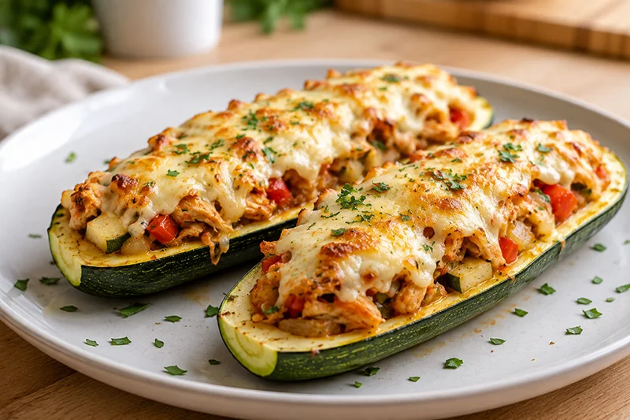

Receta saludable
Calabacín relleno de pollo
Un calabacín relleno de pollo desmenuzado y verduras, gratinado con queso ligero. Una receta completa, saludable y rica en proteínas.
Ingredientes
- 1 calabacín grande
- 200 g de pechuga de pollo
- 50 g de cebolla
- 50 g de pimiento rojo
- 1 diente de ajo
- 40 g de queso rallado ligero
- 1 cucharadita de aceite de oliva virgen extra
- Pimienta negra al gusto
- Sal al gusto
Preparación
- Lava el calabacín y córtalo por la mitad a lo largo.
- Vacía con cuidado la pulpa y resérvala.
- Cuece las mitades de calabacín durante unos minutos o ásalas ligeramente hasta que empiecen a ablandarse.
- Corta la pechuga de pollo en dados pequeños y cocínala en una sartén con el aceite.
- Añade la cebolla, el ajo, el pimiento y la pulpa del calabacín picados y cocina hasta que estén tiernos.
- Rellena las mitades del calabacín con la mezcla.
- Espolvorea el queso rallado ligero por encima.
- Hornea a 200 °C durante unos 15 minutos, hasta que el queso esté ligeramente dorado.
- Sirve caliente.
Consejo práctico
No tires la pulpa del calabacín al vaciarlo. Pícala y añádela al relleno para aprovechar toda la verdura y conseguir una mezcla más jugosa.